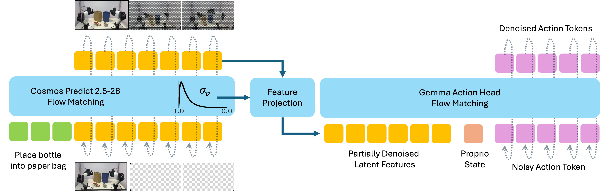
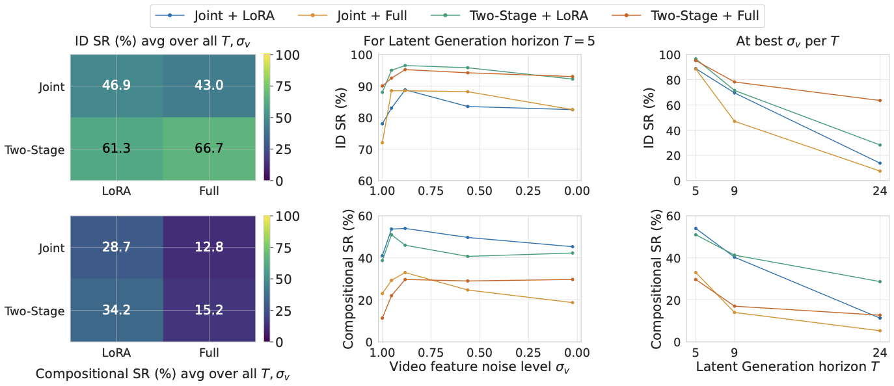
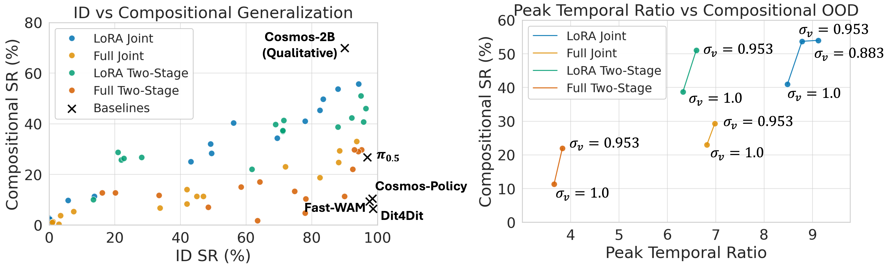
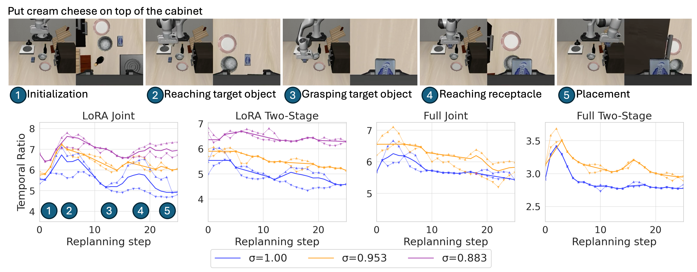
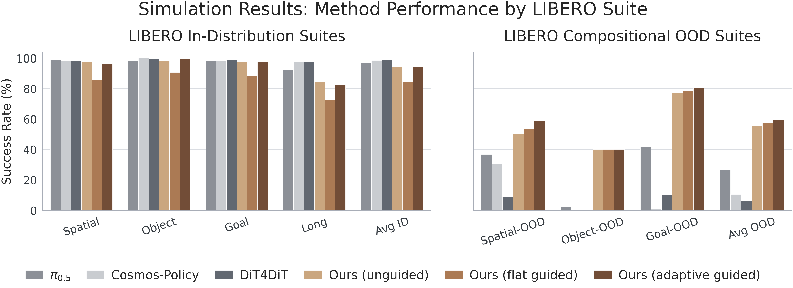
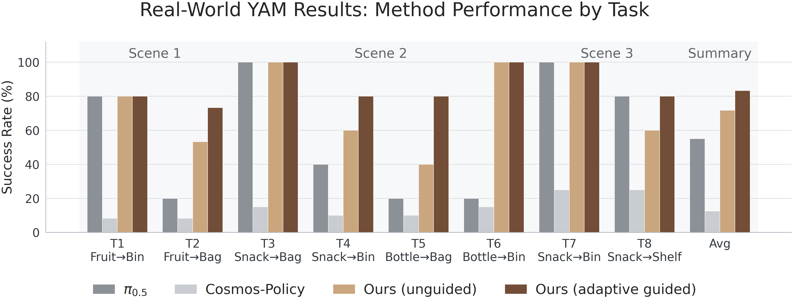

Generative video foundation models exhibit strong compositional priors, yet world-action models (WAMs) and video-action models (VAMs) often lose these priors after finetuning on robotic action data. We refer to this discrepancy as the video-action generalization gap. We systematically investigate this gap by evaluating a broad VAM design space, then introduce the Temporal Ratio (TR), an attention-based diagnostic that measures how strongly the action head relies on future latent rollouts relative to the anchored current frame. TR predicts compositional generalization capacity and varies naturally with task phase: it rises during planning and falls during precise manipulation. Based on these findings, we propose TR-Adaptive Guidance, an inference-time method that amplifies compositional video conditioning when the policy relies on future rollouts. On LIBERO and real-world bimanual tasks, this improves compositional OOD performance while preserving ID precision.
Understanding and Mitigating the
Video-Action Generalization Gap via Temporal Ratio
We study VAMs that feed partially denoised latent video features into a flow-matching action head. The central question is when the action head uses a generated future as a plan, rather than falling back to the clean current-frame anchor. TR exposes this routing behavior directly from attention, turning a noisy design sweep into a measurable operating regime.

We characterize the VAM design space along three axes that control how much of the pretrained video prior survives into action generation:
- Adaptation strategy — how the pretrained video backbone is finetuned on action data, from lightweight LoRA to full finetuning. LoRA tends to preserve more of the pretrained temporal structure, while full finetuning more readily overwrites it.
- Video feature noise level (σ) — the diffusion noise level at which the partially denoised latent video features are read out and passed to the action head. Intermediate noise levels are strongest: too clean collapses onto the current frame, too noisy destroys the future plan.
- Temporal horizon — how far into the future the video model rolls out before conditioning the action. Longer rollouts improve video-level plans, but do not always translate into higher action success.

Absolute success rates across backbone adaptation, video noise level, and prediction horizon form a fragmented landscape. TR provides a more mechanistic view: it measures whether future-predictive video features are actually routed into action generation.

At each replan step, the action tokens attend over current-frame video tokens and predicted future video tokens. TR is the ratio of action attention assigned to future frames over the attention assigned to the current frame. We use it both as a diagnostic and as a runtime signal for adaptive guidance.

We also evaluate on compositional out-of-distribution variants of LIBERO — spatial, goal, and object generalization. Slide through one rollout per task; each clip pairs the executed rollout (top) with the policy's predicted video (bottom). A few tasks the policy does not solve are marked ✗.
The grouped bar chart below compares TR-Adaptive Guidance against baselines on simulation (LIBERO), reporting success rates across in-distribution and compositional out-of-distribution suites.

The real-world YAM evaluation tests object-goal binding under multiple target and receptacle candidates. The same TR signal used in simulation is used to amplify planning-time video conditioning on the robot.
Our real-world policies are trained on a 22-task bimanual manipulation set drawn from the open-source ABC dataset (ABC-130k), a large-scale behavior-cloning corpus collected on two-arm YAM stations. Each clip stitches the synchronized wrist and scene camera views side by side. Pick a task to load it into the viewer.
No tasks match your filter.
Run as a video model only, with no action execution, the generative backbone still imagines coherent futures for novel object and receptacle combinations. This is evidence that the compositional prior survives in the video stream even when the action head does not follow it. These are 10 fps autoregressive self-forcing predictions rolled out up to 10 times, generating a 1.7-second chunk at each step.
The grouped bar chart below compares TR-Adaptive Guidance against baselines on the real-world YAM tasks, reporting success rates across in-distribution and compositional out-of-distribution settings.

@inproceedings{mishra2026temporalratio,
title={Understanding and Mitigating the Video-Action Generalization Gap via Temporal Ratio},
author={Mishra, Utkarsh A. and Mao, Jiayuan and Chen, Yongxin and Xu, Danfei and Liu, Yang and Chen, Xi},
booktitle={Conference on Robot Learning},
year={2026}
}